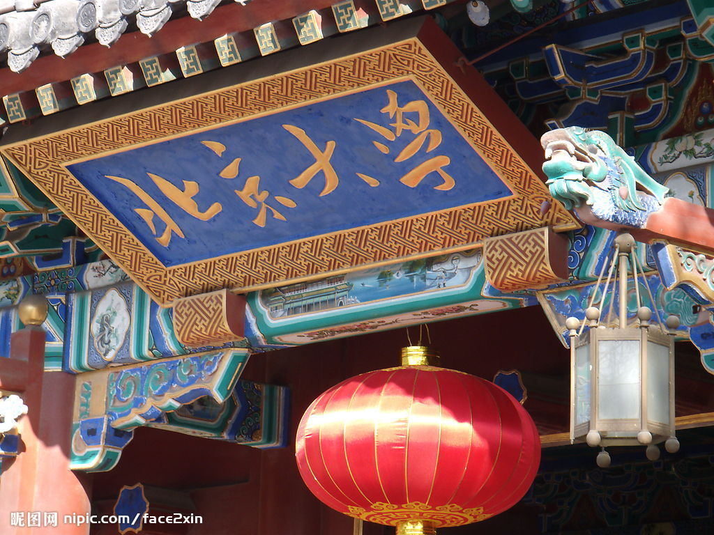

|  |  |
 |
|---|---|---|
Home | Schedule | Invited Speaker Bios | Posters | Venue/Hotel Directions | |
||
2011 International Symposium on High Confidence Software (ISHCS 2011)December 16-17, 2011, Peking University, Beijing, ChinaHost: Institute of Software and Key Laboratory of High Confidence Software Technologies, Ministry of Education, Peking University |
Schedule Outline (see Detailed Schedule)
December 16 Friday 2011
- 8:30-8:45am Opening Remark by Hong
Mei
(Symposium Chair)
- 8:45-9:55am Presentation Session 1: Internetware
and Services (2 presentations)
- 9:55-10:15am Tea Break
- 10:15-12:00pm Presentation Session 2: Testing and Debugging (3 presentations)
- 12:00-1:30pm Lunch Break
- 1:30-2:40pm Presentation Session 3: Reliable Systems (2 presentations)
- 2:40-3:00pm Tea Break
- 3:00-4:00pm Panel Discussion (Future
of Software Research in Asia-Pacific/China Region)
- 4:00-5:30pm Poster Session
December 17 Saturday 2011
- 8:30-10:15am Presentation Session 4: Emerging
Systems (3 presentations)
- 10:15-10:30am Tea Break
- 10:30-11:00am Presentation Session 5: Software
Analytics (1 presentation)
- 11:00-12:00pm Panel Discussion (Practice
and Foundation for High Confidence Software)
- 12:00-1:30pm Lunch Break
- 1:30-3:15pm Presentation Session 6: Program Analysis (3 presentations)
- 3:15-3:35pm Tea Break
- 3:35-4:30pm Free Discussion Session
Detailed Schedule
December 16 Friday 2011
- 8:30-8:45am Opening Remark by Hong
Mei
- 8:45-9:55am Presentation Session 1: Internetware and Services Session Chair: Shing-Chi Cheung
- Internetware: A Software Paradigm for Internet as a Computer by Gang Huang (Peking University, China)
- Service Reliability Engineering: Performance Evaluation, Fault Tolerance, and Reliability Prediction by Michael R. Lyu (Chinese University of Hong Kong, China)
- 9:55-10:15am Tea Break
- 10:15-12:00pm Presentation Session 2: Testing and Debugging Session Chair: Zhendong Su
- Cooperative Testing and Analysis: Human-Tool, Tool-Tool, and Human-Human Cooperations to Get Work Done by Tao Xie (Peking University, China/North Carolina State University, USA)
- Automating Test Automation by Suresh Thummalapenta (IBM Research, India)
- Canonicalizing Execution for Automated Debugging by Xiangyu Zhang (Purdue University, USA)
- 12:00-1:30pm Lunch Break
- 1:30-2:40pm Presentation Session 3: Reliable Systems Session Chair: Zhenjiang Hu
- Making
OS Kernels Crash-Proof by Design and Certification by
Zhong
Shao (Yale University, USA)
- Are
Users' Misconfigurations Your Fault? by
Yuanyuan Zhou
(University of California San Diego, USA)
- 2:40-3:00pm Tea Break
- 3:00-4:00pm Panel Discussion (Future of Software Research in Asia-Pacific/China Region) Session Chairs: Tao Xie and Lu Zhang
- Panelists: Shing-Chi Cheung, David Rosenblum, Zhong Shao, Zhenjiang Hu
- 4:00-5:30pm Poster Session
December 17 Saturday 2011
- 8:30-10:15am Presentation Session 4: Emerging Systems Session Chair: Gang Huang
- The Multi-facets of Building Dependable Applications over Connected Physical Objects by Shing-Chi Cheung (Hong Kong University of Science and Technology, China)
- High-Confidence Ubiquitous Computing Systems by David Rosenblum (National University of Singapore, Singapore)
- A Temporal Framework for Timely Completion of Cloud Workflows by Yun Yang (Swinburne University of Technology, Australia)
- 10:15-10:30am Tea Break
- 10:30-11:00am Presentation Session 5: Software Analytics Session Chair: Suresh Thummalapenta
- Software Analytics in Practice – Approaches and Experiences by Dongmei Zhang (Microsoft Research Asia, China)
- 11:00-12:00pm Panel Discussion (Practice and Foundation for High Confidence Software) Session Chairs: Tao Xie and Dongmei Zhang
- Panelists: Yingnong Dang, Gang Huang, Zhendong Su, Suresh Thummalapenta, Xiangyu Zhang
- 12:00-1:30pm Lunch Break
- 1:30-3:15pm Presentation Session 6: Program Analysis Session Chair: Xiangyu Zhang
- Bidirectional
Model Transformation for High-Confidence Software
Evolution by Zhenjiang
Hu (National Institute of Informatics, Japan)
- Detecting Access Control Vulnerabilities in Web Applications by Zhendong Su (University of California Davis, USA)
- Can We Just Change What We See on the Interface? by Lu Zhang (Peking University, China)
- 3:15-3:35pm Tea Break
- 3:35-4:30pm Free Discussion Session. Session Chairs: Tao Xie and Lu Zhang